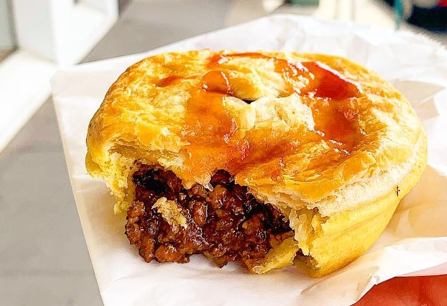

meatpie

Ingredients
- flour
- butter or margarine
- salt
- cold water
- minced meat
- onion
- carrot
- potato
- seasoning cube
- vegetable oil
Steps
- In a bowl, mix flour, salt, and butter until it forms a crumbly texture.
- Add cold water gradually to form a smooth dough, then refrigerate for 20 minutes.
- For the filling, heat oil in a pan, add minced meat, onions, carrot, and potatoes.
- Season with salt, pepper, and seasoning cubes; cook until tender.
- Roll out the dough and cut into round shapes using a cutter or bowl.
- Place filling in the center of each round and fold over to form a semi-circle.
- Press edges with a fork to seal.
- Brush with egg wash for golden color.
- Bake in a preheated oven at 180°C (350°F) for 25–30 minutes or until golden brown.
This Nigerian meat pie is crispy outside, soft inside, and filled with a savory, juicy meat and veggie mix.
Best served warm with tea, soft drinks, or as a snack on the go!
homepage